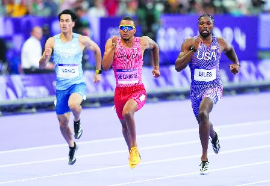
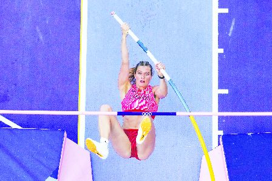
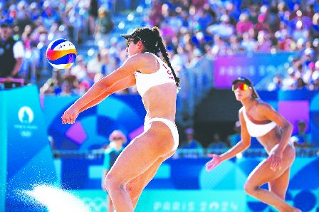

加拿大选手Andre De Grasee（中）昨日参加200米短跑项目，成功晋级。（加新社）

加拿大女子撑竿跳选手纽曼闯入决赛。（加新社）

加拿大拳唡排球选手昨日击败了美国队。（加新社）
加拿大短跑名将德格拉斯（Andre De Grasse）昨日在男子200米项目分组比赛，跑出20.3秒，成功晋级准决赛。奥运专页刊A5
德格拉斯在分组成绩排第二名，仅次于刚夺下百米短跑奥运金牌的美国选手Noah Lyles。
德格拉斯是东京奥运会男子200米项目的金牌得主，他已拥有6面奥运奖牌，德格拉斯本届在男子100米项目未能闯入决赛，但在200米短跑项目分组表现恢复正常，令加拿大人期待他能继续在200米项目卫冕成功，为加拿大再添一面金牌。
曾在两届400米接力项目代表加拿大夺下奥运奖牌，来自安省怡陶碧谷的朗德尼(Brendon Rodney)在分组比赛时虽然跑出个人最好成绩，但无法自动晋级，和加拿大另一短跑选手布朗(Aaron Brown)将参加一场「败部复活赛」(Repechage），两人仍有晋级准决赛的机会。
加拿大经过连续8天在巴黎奥运均赢得奖牌，昨日第一天未添奖牌。除了德格拉斯可能再为加拿夺下奖牌，加拿大在女子撑竿跳、以及拳唡排球项目表现杰出，极可能再添奖牌。加拿大女子撑竿跳选手纽曼（Alysha Newman）跳出4.55米的成绩，成功打进决赛。
加拿大另一女子撑竿跳选手Anicka Newell表现不错，跳出了4.4米的成绩，可惜无缘决赛。
在拳唡排球项目，加拿大队的Melissa Humana-Paredea以及Brandie Wilkerson两人以21-19，以及21-18，击败美国选手，现在已进入半准决赛。
本届奥运打入4强赛的女子3×3篮球加拿大队，昨日输给了美国，将铜牌让给了美国队。
此外，加拿大女子200米短跑项目的两名选手Audrey Leduc，以及Jacueline Madogo昨日参加了准决赛，虽然全力争取出线机会，可惜事与愿违，无法晋级进入决赛。
不过，Leduc与Madogo两名加拿大女子选手同时晋级至准决赛，这在加拿大的田径史已是罕见，上次加拿大有两名女子选手晋级至准决赛，已经是1976年时，距离现在已经是48年。